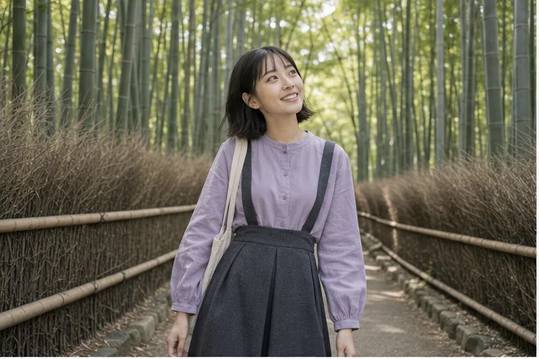
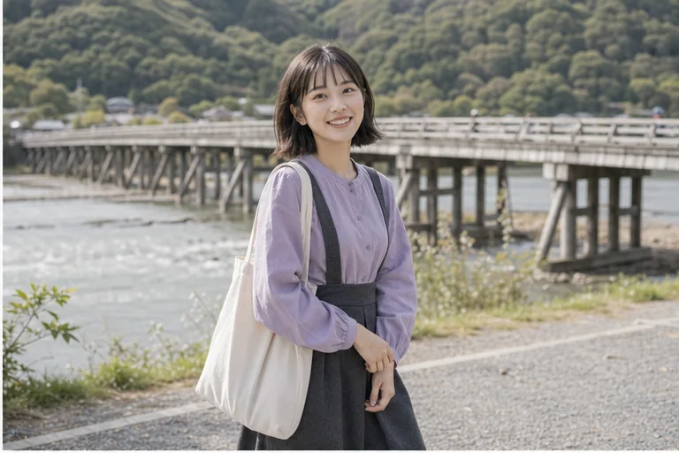
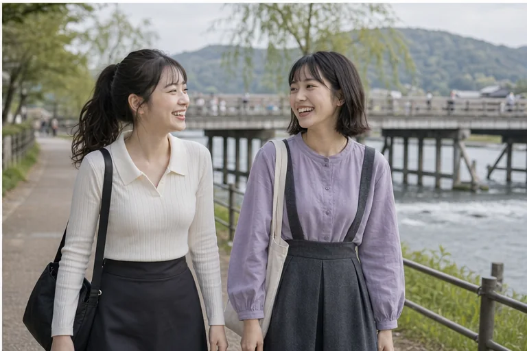

嵐山的早晨有一種很輕的魔法。走進竹林的時候，四周突然安靜下來，只剩下腳步聲和風吹過竹葉的聲音。抬頭看見一整片綠色往天空長上去，心情也好像被慢慢拉直了。
走到渡月橋旁邊，河風又變成另一種溫柔。今天和好朋友一起在河畔拍照，笑到差點忘記自己本來想擺什麼姿勢。嵐山就是這樣，不需要很用力安排，它會用竹林、河水和小路，把一天變得很舒服。
如果來京都想要一點自然感，我真的很推薦把嵐山留給早上。人還沒那麼多，光也比較柔，整個地方像剛醒來一樣可愛。
Kyoto / 嵐山竹林 / 渡月橋
嵐山的早晨有一種很輕的魔法。走進竹林的時候，四周突然安靜下來，只剩下腳步聲和風吹過竹葉的聲音。抬頭看見一整片綠色往天空長上去，心情也好像被慢慢拉直了。 走到...




嵐山的早晨有一種很輕的魔法。走進竹林的時候，四周突然安靜下來，只剩下腳步聲和風吹過竹葉的聲音。抬頭看見一整片綠色往天空長上去，心情也好像被慢慢拉直了。
走到渡月橋旁邊，河風又變成另一種溫柔。今天和好朋友一起在河畔拍照，笑到差點忘記自己本來想擺什麼姿勢。嵐山就是這樣，不需要很用力安排，它會用竹林、河水和小路，把一天變得很舒服。
如果來京都想要一點自然感，我真的很推薦把嵐山留給早上。人還沒那麼多，光也比較柔，整個地方像剛醒來一樣可愛。